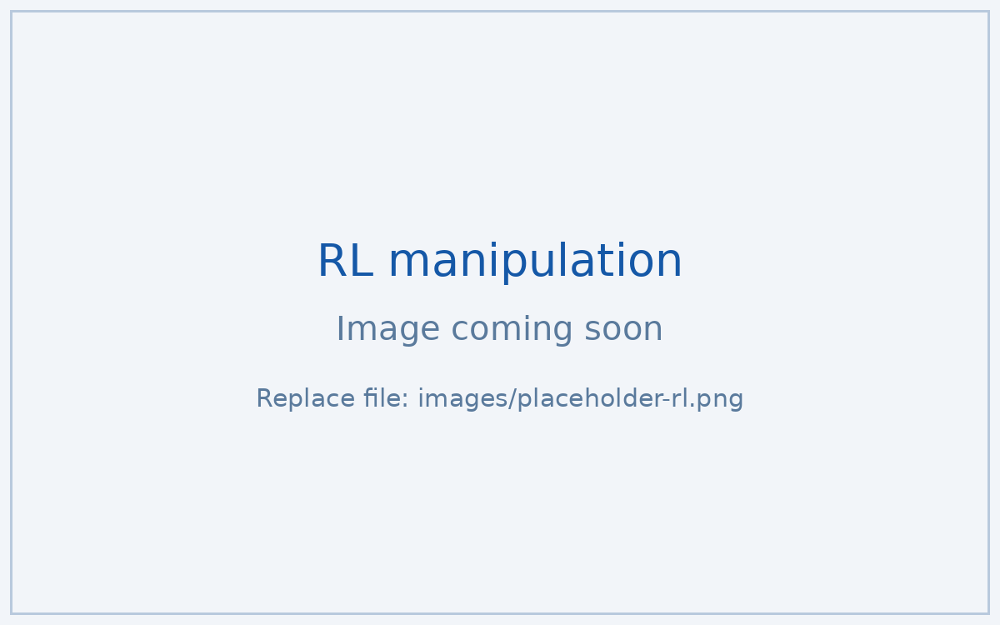
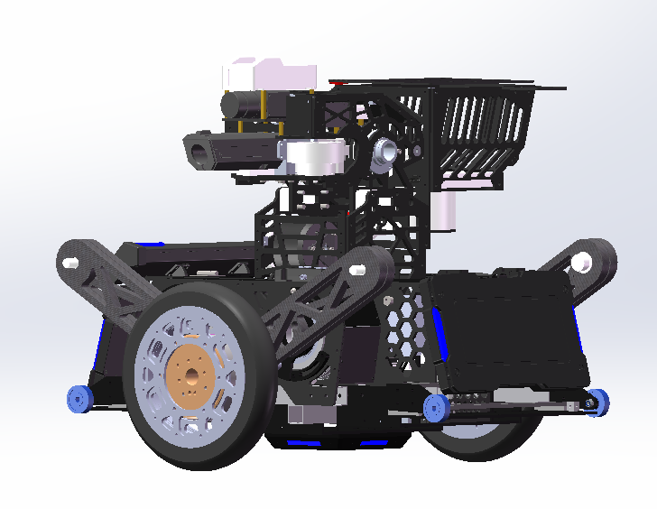
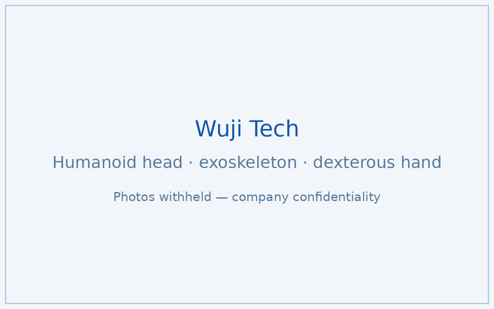
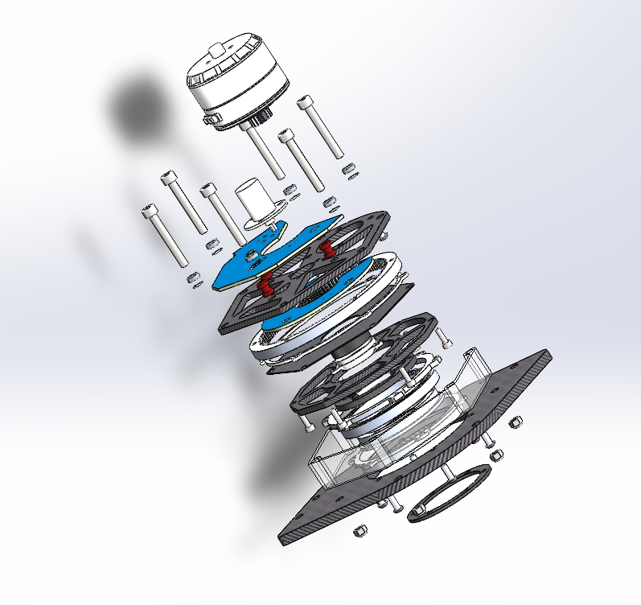
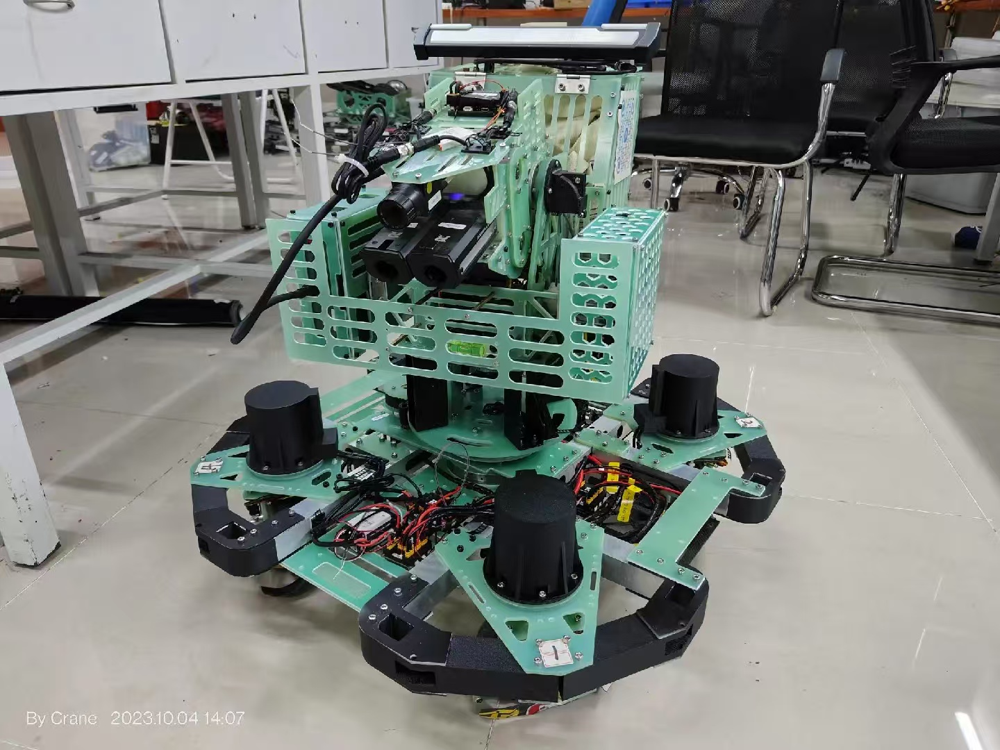
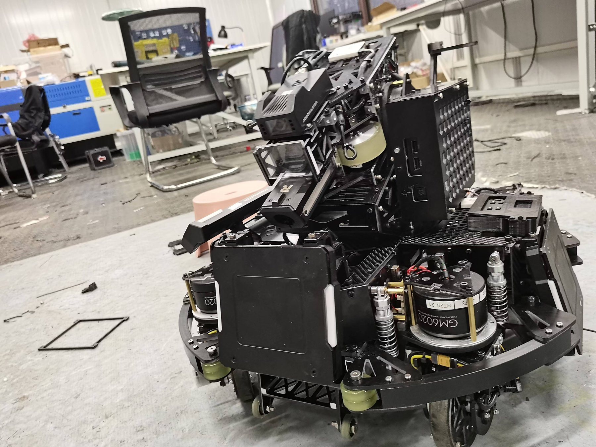

李泽昊
我设计并制造机器人——从减速箱、轮组到全身控制的轮腿双足平台。 纽约大学机电、机器人与自动化工程硕士在读；曾任同济大学 Superpower RoboMaster 战队机械组负责人，带领 20 人设计团队征战三个赛季。工作横跨机械设计、物理仿真 （MuJoCo、Simscape）与面向操作任务的强化学习。
研究与独立项目

微重力机器人与双臂操作平台
主导 ATMOS 开源版本与 RRL M3 双臂操作平台的机械评审与结构重构，并用 MuJoCo 仿真完成工作空间分析与设计验证。

面向操作任务的强化学习
从零实现 Q-Learning 与 DQN，用于机械臂操作实验（含开抽屉任务），配套 MuJoCo 仿真环境。

轮腿式双足机器人
基于 LQR 全身控制框架的高动态两轮腿双足平台，五连杆腿部构型。我负责全部机械设计： 连杆综合、杆长优化与电机选型。

同步驱动底盘 + 5 自由度机械臂
四个同步驱动轮组构成全向底盘，搭载 yaw-pitch-pitch-roll-yaw 五自由度机械臂。 机械之外，编码器/配电 PCB、STM32 底盘运动学与 PID 控制、YOLOv7 识别也由我完成。
工业界经历

人形机器人仿真与机构研究
围绕 Ultron V3.0 人形机器人的仿真与机械研究：基于 GJK 碰撞检测的工作空间分析、 MuJoCo/Simscape 全身关节力矩研究，以及基于 RoboGrammar 的构型优化。

人形头部与灵巧手工程化
基于人体运动学约束设计 3 自由度颈部稳定机构；外骨骼臂静力学仿真与 CNC 结构优化；20+ 自由度灵巧手动态负载耐久测试。

医疗机器人毛囊夹持机构
主导植发机器人毛囊夹持机构的重新设计：减少电机依赖、提升空间效率， 并设计了经仿真验证、直接投产的弹簧锁止机构。
竞赛机器人 — RoboMaster

传动系统深潜：轮组与行星减速箱
四代同步驱动轮组——从 Watt 连杆悬挂到一体化轮毂电机——外加从零设计的 2K-H 行星减速箱（10.16:1）。减重 45.5%，底盘小陀螺 1.0 秒/圈 → 0.3 秒/圈。

RoboMaster 哨兵机器人 · 2025 赛季
第三代哨兵：在成熟的 2024 架构上系统性推进板件轻量化与整机稳定性提升， 再夺全国赛哨兵兵种一等奖。

RoboMaster 哨兵机器人 · 2023–2024
从零设计的自主哨兵：自研同步驱动底盘 + 激光雷达导航；第二赛季全面迭代—— 轮组减重、云台质心归轴、五相机环视感知与悬挂调校。

RoboMaster 步兵机器人 · 2024
以自研同步驱动传动系统重构 2019 年遗留的麦轮平台。弹仓移至 yaw 轴上， 云台转动惯量降低超 40%；底盘 100W 功率限制下小陀螺转速达 0.3 秒/圈。